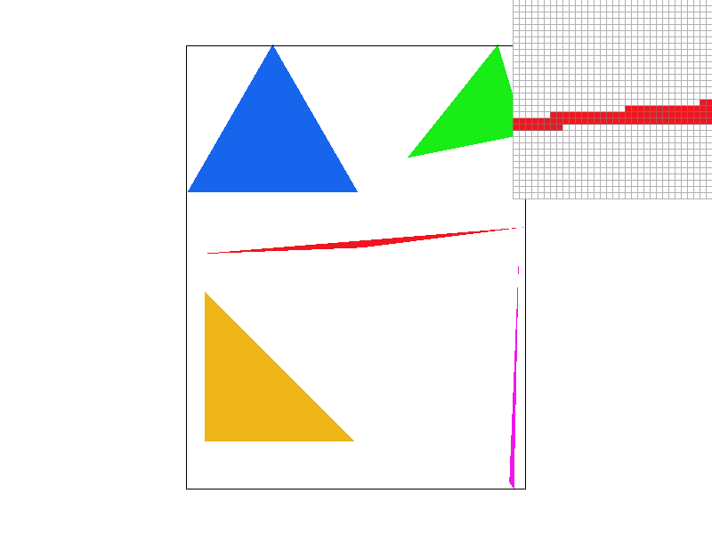
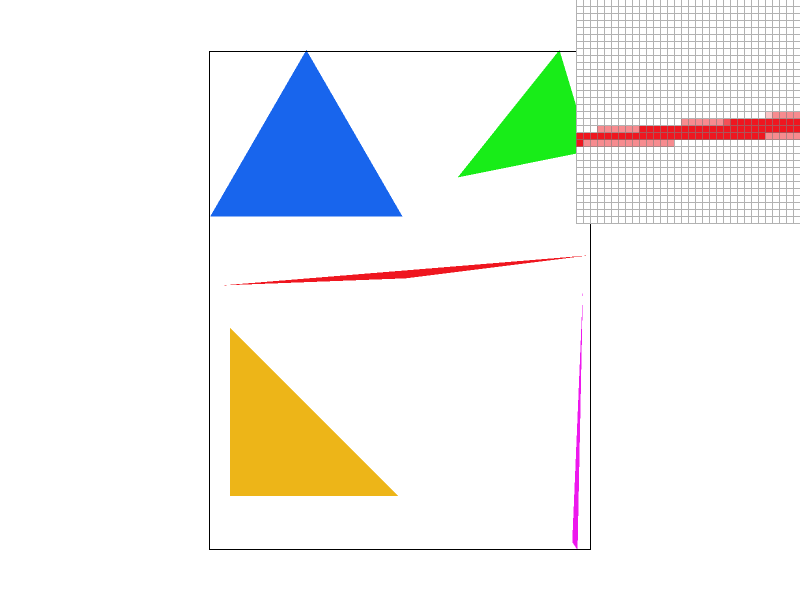
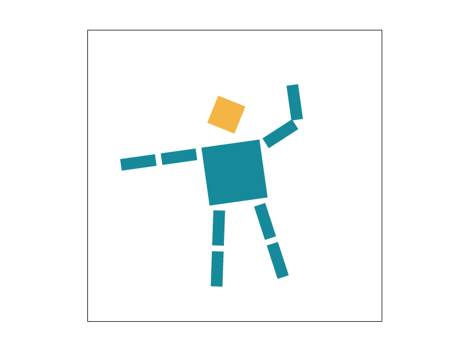
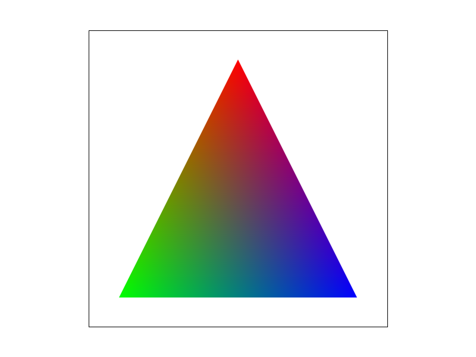
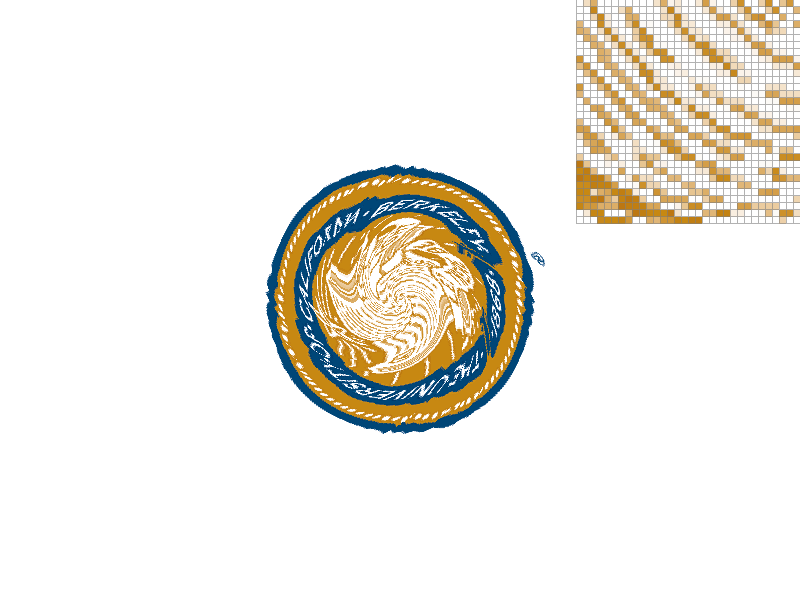
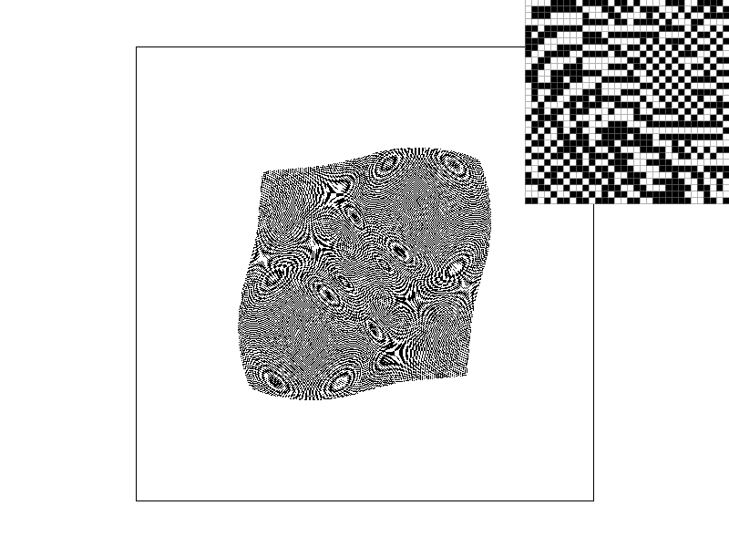

Homework 1: Rasterizer
Overview
I implemented a software rasterizer that converts SVG geometry into pixels. The pipeline supports solid triangles, supersampling, hierarchical transforms, interpolated vertex colors, and texture mapping with nearest, bilinear, and mipmap filtering. These features build on the same sample-coverage tests: transformations place the geometry, barycentric coordinates interpolate its attributes, and sampling determines the colors stored in the framebuffer.
The most useful connection is that a screen pixel represents an area. Testing only its center loses information about small features. Supersampling estimates geometric coverage with several samples, while mipmaps approximate a texture’s average over the area represented by a pixel. They solve related sampling problems at different stages of the pipeline.
The main implementation issues were keeping the sample-buffer layout consistent across all primitives, handling floating-point edge tests consistently under reversed winding, and ensuring that every allocated mipmap level contained filtered data.
Task 1: Drawing Single-Color Triangles
1. How I rasterize a triangle
I find the minimum and maximum vertex coordinates, round the bounds to pixel boundaries, and clip this bounding box to the framebuffer. At one sample per pixel, I test the center (x + 0.5, y + 0.5). Each triangle edge defines a half-plane, so I evaluate three signed edge functions:
E(a, b, p) = (bx − ax)(py − ay) − (by − ay)(px − ax)
A sample is covered if all three values are nonnegative or all three are nonpositive. Allowing either sign supports both winding orders, and including zero fills samples on boundaries. I fill covered samples with the triangle’s color.
2. Bounding-box efficiency
The loops visit only the triangle’s pixel-aligned bounding box, clipped to the screen. Each sample takes constant work, so the cost at one sample per pixel is O(B), where B is the number of pixels in that box. This matches the complexity of checking every sample inside the bounding box. No full-frame scan is needed.

Task 2: Antialiasing by Supersampling
1. Algorithm, data structures, and pipeline changes
For sample rate R, I divide each pixel into an n × n grid, where n = √R. I test the center of each grid cell at (x + (sx + 0.5)/n, y + (sy + 0.5)/n). The same three edge tests determine whether each subsample receives the triangle’s color.
The one-dimensional sample_buffer contains width × height × R floating-point colors. Each pixel stores R consecutive samples, with index (y × width + x) × R + sy × n + sx. I resize and reset the buffer when either the framebuffer size or sample rate changes, and clear it before each redraw. Points and lines fill every sample of their pixels so their original appearance is preserved.
After all primitives are drawn, resolve_to_framebuffer() averages the R colors for each pixel, clamps the RGB channels, and rounds them to 8-bit values. Keeping the subsamples separate until this final step preserves contributions from multiple primitives within the same pixel.
Supersampling is useful because averaging estimates partial pixel coverage. A pixel with only some samples inside a triangle becomes a blend of the triangle and background colors. This box filtering before downsampling reduces stair-step boundaries and helps retain thin features that a single sample might miss.
2. Comparison at 1, 4, and 16 samples per pixel

All three images use the default view of basic/test4.svg and the same inspector location. The inspector shows why the higher rates look smoother: the edge changes through intermediate colors instead of jumping directly from white to red. A finite grid can still miss extremely thin features; supersampling reduces aliasing without eliminating it completely.
Task 3: Transforms
My cubeman pose
I changed cubeman into a teal robot waving with its arm on the viewer’s right. I tilted the whole body slightly, raised the upper arm, and rotated the forearm at the elbow so the hand points upward. I also angled the legs and changed the head to gold. The nested arm groups demonstrate hierarchical transforms: changing the upper-arm orientation also carries the forearm along, while its elbow rotation provides an additional bend.

Task 4: Barycentric Coordinates
1. Meaning and implementation
Barycentric coordinates describe a point as a weighted combination of a triangle’s three vertices: p = αA + βB + γC, with α + β + γ = 1. Inside the triangle, the weights are nonnegative. At vertex A the weights are (1, 0, 0), while at the centroid they are (⅓, ⅓, ⅓).
I compute each weight by dividing the sample’s opposite-edge function by the triangle’s signed doubled area. Reversing the winding reverses both signs, preserving the weights. For every covered subsample, I interpolate the vertex colors using C = αC₀ + βC₁ + γC₂ and store the result in the sample buffer.



2. What the images demonstrate
The RGB triangle shows that the weights vary continuously across the interior. Along the edge opposite the red vertex, its weight is zero, so only green and blue are mixed. The color wheel applies the same interpolation to many adjacent triangles. Its outer silhouette remains jagged at one sample per pixel even though the colors inside the triangles vary smoothly.
Task 5: Pixel Sampling for Texture Mapping
1. Pixel sampling and implementation
Texture mapping assigns UV coordinates to triangle vertices. I interpolate these coordinates with the sample’s barycentric weights, then look up a color in the texture. Pixel sampling determines how to reconstruct a texture color when the UV coordinate falls between stored texels.
I clamp UV coordinates to [0, 1] and map them to x = u(W − 1) and y = v(H − 1) in the selected mip level. Nearest sampling rounds these coordinates and returns one texel. Bilinear sampling reads the four surrounding texels, blends horizontally using the fractional x coordinate, then blends those two results vertically using the fractional y coordinate. Border neighbors are clamped to valid texel indices, including at 1 × 1 levels.
For this comparison I keep level sampling at L_ZERO, so all texture lookups use the original image. Nearest and bilinear are selected independently from the number of screen samples per pixel.
2. Four-way comparison

These images use texmap/test5.svg, the same view at twice the default magnification, and the same inspector location over the gold-and-white detail. Nearest sampling at one sample gives abrupt changes between texels. Bilinear sampling introduces intermediate colors and makes the thin curved details smoother. Sixteen screen samples improve both methods by averaging several UV lookups within each pixel. With bilinear sampling and 16 samples, the inspected detail has the most gradual transitions, with some loss of sharpness.
3. When the methods differ most
The difference is particularly visible when a low-resolution texture is enlarged or distorted and neighboring texels have contrasting colors. Nearest sampling preserves blocks of constant color, whereas bilinear interpolation smooths the changes between texels. Supersampling can reduce the difference by averaging nearest lookups, but it does not make the two reconstruction methods identical. During strong minification, four neighboring texels are not enough to represent the whole pixel footprint; mipmaps address that problem in Task 6.
Task 6: Level Sampling with Mipmaps
1. Level sampling and implementation
Level sampling chooses a texture resolution appropriate for a screen pixel’s footprint. A mipmap stores successively filtered, smaller versions of the original texture. When many original texels map to one screen pixel, a coarser level approximates their average without reading all of them individually.
At each covered sample I interpolate UV coordinates at (x, y), (x + 1, y), and (x, y + 1). I subtract the first UV from the other two, scale u differences by the base texture width and v differences by its height, and compute:
dx = ((uₓ − u)W, (vₓ − v)H) dy = ((uᵧ − u)W, (vᵧ − v)H) L = max(length(dx), length(dy)) D = clamp(log₂(max(1, L)), 0, last mip level)
The offsets are a full screen pixel even when supersampling, as required by the task. L_ZERO always selects level 0. L_NEAREST rounds D to the closest level. L_LINEAR samples floor(D) and ceil(D) and blends by D’s fractional part. Each level uses the selected nearest or bilinear pixel filter; combining linear level sampling with bilinear pixel sampling gives trilinear filtering.
I access mip levels by reference to avoid copying entire images. I also fixed the starter mip-generation loop so it fills every allocated level, including the smallest levels. Otherwise sufficiently large footprints could select allocated but unfiltered black images.
2. Speed, memory, and antialiasing tradeoffs
| Technique | Speed | Memory | Effect and limitation |
|---|---|---|---|
| Nearest pixel sampling | 1 texel fetch per level per sample | No additional texture images | Fast but blocky under magnification and prone to aliasing under minification |
| Bilinear pixel sampling | 4 texel fetches and interpolation | No additional texture images | Smoother magnification; does not integrate a large minification footprint |
| Nearest mip level | Footprint calculation plus 1 selected level | Full mip chain; about ⅓ extra texture storage for square power-of-two textures | Reduces minification aliasing; discrete level changes can remain visible |
| Linear mip levels | 2 level lookups; up to 8 texel fetches with bilinear filtering | Same mip chain | Smooths transitions between resolutions; isotropic footprint estimates can blur stretched textures |
| R screen samples per pixel | R coverage and shading evaluations per pixel | R colors per framebuffer pixel | Improves geometry edges and texture sampling; high rates cost more work and can still undersample fine patterns |
The ⅓ mip overhead follows from 1/4 + 1/16 + … = 1/3; exact overhead varies with texture shape and dimensions. In this implementation the mip chain is allocated even when L_ZERO is selected, so changing the level mode does not itself allocate more memory. Likewise, nearest and bilinear share the same stored images.
3. Comparison using a separately sourced PNG
I used an 800 × 600 one-pixel black-and-white checkerboard by Johannes Kalliauer, available under CC0 from Wikimedia Commons. Its high-frequency pattern makes aliasing easy to see. I copied the mesh from texmap/test6.svg and pointed it at this texture. The scene and texture are included as mipmap_demo.svg and checkerboard.png.



All four images have the same view and inspector location. With level 0 and nearest sampling, the output contains strong false rings and wavy patterns. Bilinear sampling reduces their contrast but leaves substantial moiré because its small neighborhood does not cover the entire screen-pixel footprint.
Nearest-level mipmapping replaces most of this unstable detail with gray, which is the expected average of equally sized black and white checks. The two smaller patterned regions correspond to parts of the mapping where a finer level is selected. Bilinear sampling softens the remaining texel changes there. This example also shows a limitation: choosing the nearest mip level can leave abrupt transitions and does not eliminate every aliasing artifact.